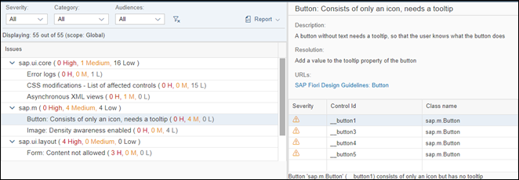

What's New in OpenUI5 1.52
OData V2 Model
You can now optimize dependent bindings in OData V2 models. The OData V2 model
now supports a preliminaryContext flag. When set to
true, the OData model can bundle the OData calls for
dependent bindings into fewer $batch requests. Two bindings are
considered dependent if one cannot be resolved without the other being resolved
first. For example, a relative binding cannot be resolved without a resolved
absolute binding.
OpenUI5 OData V4 Model
The new version of the OpenUI5 The OData V4 model has the following features:
-
Handling of
Edm.Streamin read-only mode -
Possibility to declare several batch groups as
$autoor$direct -
Enhancements to the adapter to use the V4 model with an OData V2 service: handling of simple
$filterexpressions
Incompatibility Due to a Bug Fix
If you call the sap.ui.model.odata.v4.Context#getObject() or the sap.ui.model.odata.v4.Context#requestObject() methods without
a parameter, the expected and documented behavior is that the same result is
returned as if the parameter sPath="" had been specified.
However, due to a bug, the return value wraps the expected output and can
only be accessed using .value[0], for example
oContext.getObject().value[0].
If you have used this workaround, your application will break as of OpenUI5 version 1.44.6.
Solution: If your application needs to run with both the
fixed and unfixed versions of OpenUI5, specify
the sPath="" parameter, for the sPath
parameter. In both cases, you must not use the
.value[0]workaround any more.
Due to the limited feature scope of this version of the OpenUI5 OData V4
model, check that all required features are in place before developing
applications. Check the detailed documentation of the features, as certain
parts of a feature may be missing. While we aim to be compatible with
existing controls, some controls might not work due to small
incompatibilities compared to
sap.ui.model.odata.(v2.)ODataModel, or due to missing
features in the model (such as tree binding). This also applies to controls such as
TreeTable and AnalyticalTable, which
are not supported together with the OpenUI5 OData V4
model. The interface for applications has been changed for easier and more
efficient use of the model. For a summary of these changes, see Changes Compared to OData V2 Model.
For more information, see OData V4 Model, the API Reference, and the sample in the Demo Kit.
Support Assistant
Support Assistant has been enhanced with the following features:

-
Additional rule property Async
The default value of this property is
false. If you set it totrue, a resolve function is passed as a parameter of the check function to allow you to resolve the asynchronous operation. CallfnResolveto indicate that the asynchronous check function has finished. The asynchronous function waits 10 seconds before it times out. -
New options to check the location from which Support Assistant has been loaded:
-
When you click the Settings button in the Support Assistant toolbar, you can see the URL at the bottom of the dialog box. A Copy button next to the URL allows you to copy the location to the clipboard.
-
In the Technical Information section of the report.
-
-
Displaying issues and their severity
After an analysis run, you can see how many issues of each severity have been reported for each library. This information is also available for the individual rules. In the Details section for each rule, you can see a severity icon for each issue generated by that rule.

Parent topic: Previous Versions